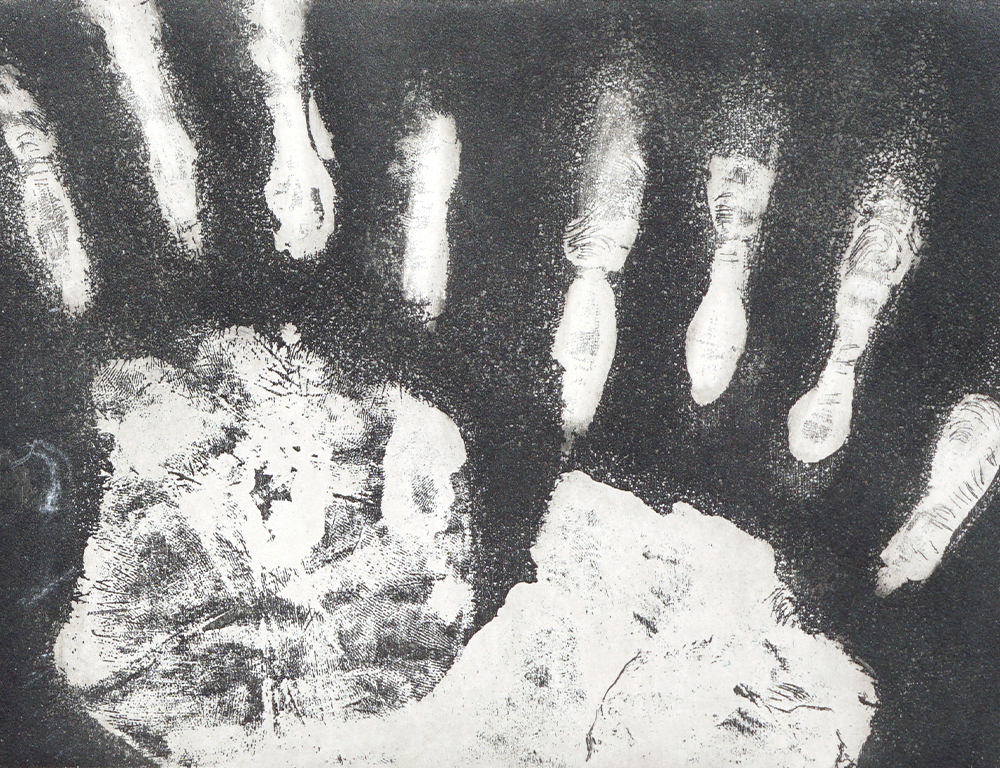

Effacement
rendre visible le passage de la trace
Ce projet joue avec le procédé d’évidement de la gravure sur zinc comme un moyen de figer un processus d’effacement. L’aquateinte vient travailler la plaque de zinc, pour créer ces empreintes de mains. Les différents temps de traitement à l’aquateinte donnent à la séquence d’images gravées sa dimension narrative.
Impression - immersion 30 sec dans l’aquateinte
Impression - immersion 2 min dans l’aquateinte
Impression - immersion 5 min dans l’aquateinte
Impression - immersion 8 min dans l’aquateinte

Impression - immersion 12 min dans l’aquateinte
Impression - immersion 12 min dans l’aquateinte

Plaque en zinc - travail à la pointe
Plaque en zinc 19cm x 13cm

Plaque en zinc - Détail 1

Plaque en zinc - Détail 2

Plaque en zinc - Détail 3
◯
◯
◯
◯
◯
◯
◯
◯
◯
◯